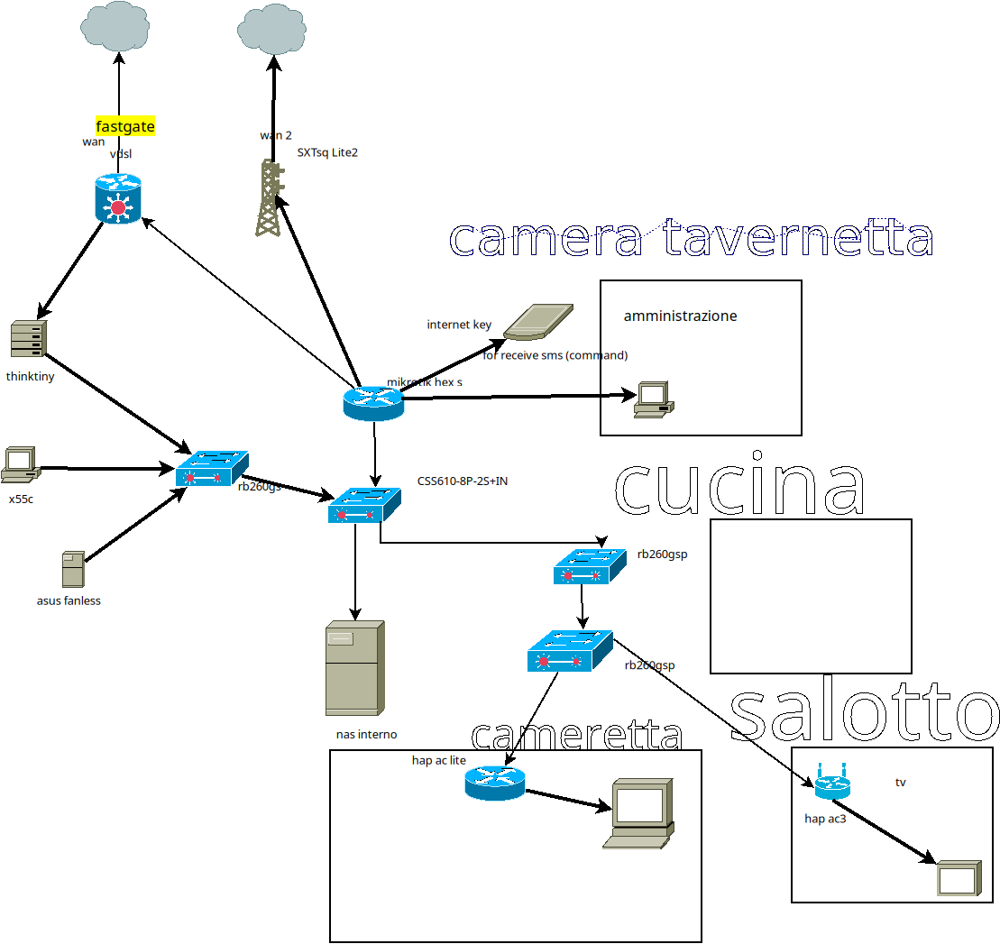

|
|
|---|
Diego Tortoroglio
Età: anni
Le
mie competenze nel settore delle reti informatiche
comprendono:
- progettazione
e creazione di una rete lan
- Utilizzo
e configurazione di dispositivi di rete: switch,
router, access point, firewall
- Conoscenza dei principali protocolli di rete: TCP/IP, DNS, DHCP, HTTP/S, SSH
- familiarità
con comandi RouterOS
- Gestione
dei protocolli vpn quali OpenVpn e Wireguard
- Gestione del firewall e della sicurezza di rete.
- conoscenza
dei protocolli di tunneling tra qui vlan, ipip, eoip
- gestione del routing e tecniche di bilanciamento del carico.
- esperienza nella virtualizzazione tramite proxmox.
- conoscenza dei protocolli di routing dinamico
Attualmente sono impegnato
nello studio del protocollo IPv6
e delle infrastrutture in fibra ottica
| Mi tengo aggiornato
a 360° nel campo informatico in cerca di
nuovi progetti, per trovare soluzioni finalizzate alla loro applicazione pratica in contesti reali e operativi. allo stesso tempo cercando di collocarli correttamente in base al contesto più adatto. "Tra la sedia e il pc le comptenze trasversali sono quasi necessarie per comprendere a fondo un problema, avere un' intuizione e arrivare alla soluzione" |
Contattami:

Fin da piccolo sono stato
affascinato dal mondo dell'informatica.
Nel corso degli anni ho esplorato numerose
distribuzioni Linux
approfondendo cosi le mie competenze studiando sulle risorse per la certificazioni LPI 1 e LPI 2.
Durante questo percorso mi sono avvicinato al mondo dell' infrastruttura di rete e ho sviluppato conoscenze in questo ambito.
Ho acquisito esperienza con le apparecchiature MikroTik e adottandole quasi interamente come brand di riferimento
grazie al loro eccellente rapporto qualità-prezzo.
Inoltre ho frequentato e concluso il corso MTCNA alla Dadonet Accademy di Milano.
Attualmente svolgo la mansione di operaio presso un panificio presente sul territorio.
All'età di 13 anni, ho scoperto
l'universo dei sistemi operativi liberi
avvicinandomi cosi alla filosofia dell'open
source.
approfondendo cosi le mie competenze studiando sulle risorse per la certificazioni LPI 1 e LPI 2.
Durante questo percorso mi sono avvicinato al mondo dell' infrastruttura di rete e ho sviluppato conoscenze in questo ambito.
Ho acquisito esperienza con le apparecchiature MikroTik e adottandole quasi interamente come brand di riferimento
grazie al loro eccellente rapporto qualità-prezzo.
Inoltre ho frequentato e concluso il corso MTCNA alla Dadonet Accademy di Milano.
Attualmente svolgo la mansione di operaio presso un panificio presente sul territorio.